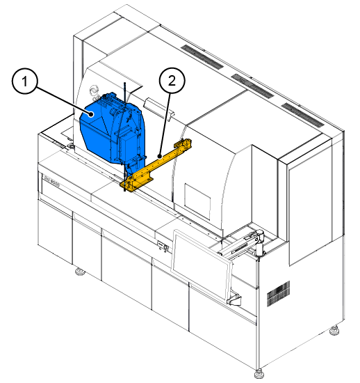
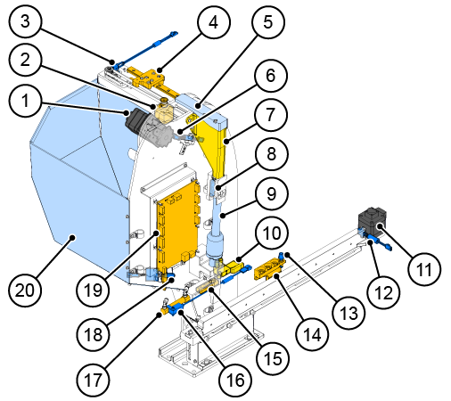
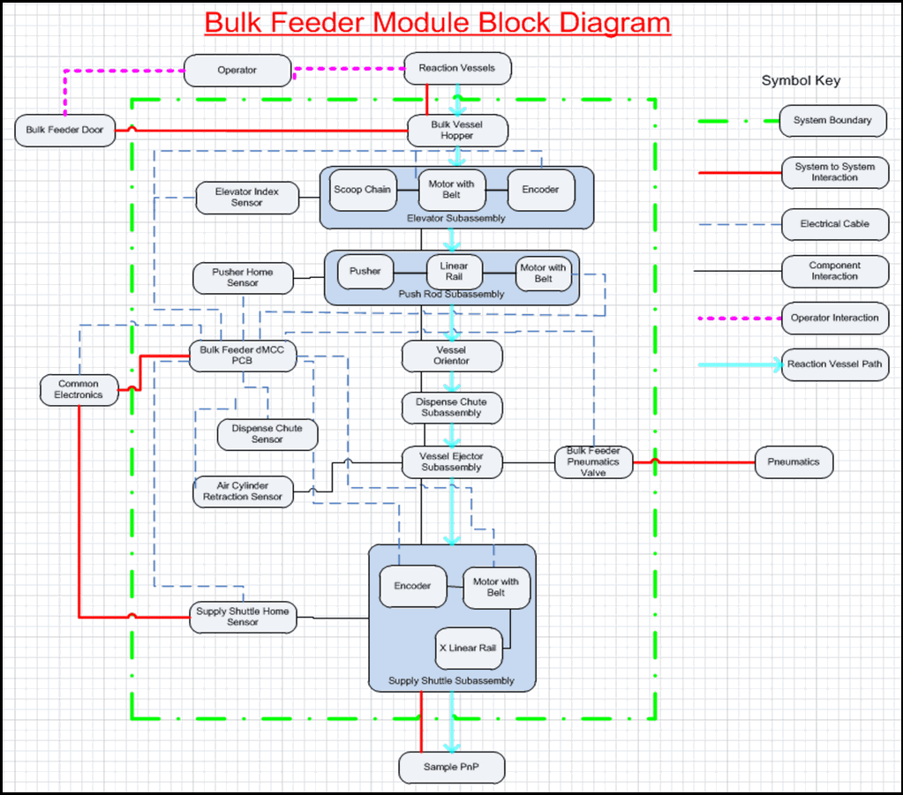

Operating Principles for the Bulk Vessel Feeder and Supply Shuttle
This topic includes information about the theory of operation, or operating principles, for the bulk vessel feeder module, including the reaction vessel (RV) supply shuttle (also referred to as the supply carriage).
| Table of Contents |
|---|
| Function |
| Location |
| Operational Overview |
| Component Locations and Functions |
| Component and Interaction Block Diagram |
| Interacting and Intersecting Devices |
Function
The bulk vessel feeder and supply shuttle function as a storage module and presentation device for vessels to be used throughout the instrument. The bulk feeder accepts vessels as they are loaded into the hopper and transfers them to the supply shuttle, where they are presented to the sample pick and place (PnP) and cascaded to other areas of the instrument.
Location
The bulk vessel feeder and supply shuttle are located at the front left of the instrument, with the supply shuttle extending toward the rear of the instrument.

| 1 | Bulk vessel feeder |
| 2 | Supply shuttle |
Operational Overview
The following steps describe how the module performs its functions.
- The user loads vessels into the hopper of the bulk feeder.
- Vessels travel up the chain and scoops until they reach the pusher.
- When vessels are required in the dispense/escrow chute, the pusher activates and moves a vessel into the orienter.
- The orienter orients the vessel so that the open end faces up, and the vessel drops into the chute.
- The supply shuttle moves to a position beneath the ejector assembly at the bottom of the chute.
- Vessels are ejected into the supply shuttle (three open positions).
- The supply shuttle moves to a position beneath the sample pick and place (PnP) and presents the vessels for transfer by the PnP.
Component Locations and Functions

| 1 | Chain drive motor and encoder |
| 2 | Pusher drive motor |
| 3 | Pusher motor home sensor |
| 4 | Pusher assembly (motor drive with linear rail) |
| 5 | Orienter cover |
| 6 | Chain motor index sensor |
| 7 | Orienter |
| 8 | Dispense chute status sensor |
| 9 | Removable dispense chute |
| 10 | Pneumatic manifold and valve |
| 11 | RV supply carriage motor |
| 12 | RV supply carriage home sensor |
| 13 | Alignment pin |
| 14 | RV supply shuttle |
| 15 | Vessel dispenser block |
| 16 | Dispense cylinder position sensor |
| 17 | Dispense cylinder |
| 18 | Vessel level sensor |
| 19 | Bulk feeder DMCC |
| 20 | Hopper |
| Component | Description and Function |
|---|---|
| Chain Drive Motor | Drive motor for the BF chain. |
| Chain Motor Encoder | Encoder for BF chain drive motor. |
| RV Pusher Motor | Motor for BF pusher assembly. |
| Pusher Motor Home Sensor | Home sensor for pusher assembly. |
| Pusher Assembly | Offloads vessels from the BF scoops. |
| Orienter Cover | Ensures vessels are properly presented to the orienter. |
| Orienter | Allows for vessels to be properly oriented for dropping into the chute. |
| Chain Motor Index Sensor | The BF drive sprocket seeks to this sensor corresponding to each scoop position to be presented to the pusher. |
| Dispense Chute Status Sensor | Monitors vessels dropping past it and indicates full when seven vessels are in the chute. |
| Removable Dispense Chute | Allows for easy removal for clearing jams and troubleshooting. |
| Pneumatic Manifold and Valve | Valve and manifold for incoming instrument air and supplies air to the vessel dispense cylinder. |
| RV Supply Shuttle | Shuttle for accepting vessels from the BF and supplying them to the sample PnP. |
| RV Supply Shuttle Motor Encoder (CA02E01) | Encoder for the BF shuttle motor. |
| Alignment Pin | Shuttle alignment pin for the PnP. |
| RV Supply Shuttle Motor (CA02M01) | Motor for the BF supply shuttle. |
| RV Supply Shuttle Home Sensor (CA02S01) | Home sensor for the supply shuttle. |
| Vessel Dispenser Block | When the pneumatic cylinder extends, the dispenser block allows for vessels to drop from the chute and into the supply shuttle. |
| Dispense Cylinder Position Sensor | Monitors retract and extend state of the pneumatic cylinder. |
| Dispense Cylinder | Pneumatic cylinder that is retracted in its neutral state. Extending allows for vessels to drop. |
| Vessel Level Sensor | Is triggered when the hopper is low on vessels corresponding to about 30 minutes of operation remaining before the hopper is empty. |
| Bulkfeeder DMCC | Control board for BF motors, encoders, and sensors. |
| Hopper | Allows for storage of vessels. Required to fit at least 2,000 vessels. |
Component and Interaction Block Diagram

Interacting and Intersecting Devices
The bulk feeder interacts with the following device:
- Sample pick and place